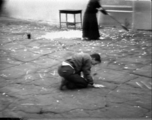

Presentations: Erika Suderburg

Taking Candace Compton and Nancy Angelo’s The Nun And The Deviant (1976) as a touchstone for queer imaginings, durational video, and performative promise of shape-shifting this presentation examines how images conjured within this work served as erotic trigger, foundational suggestion and fuel for a lesbian reorientation and agency in early Los Angeles video. What might constitute an originary imaginary for Queer production, what possibilities exist (and existed) for alternative cultural production and what are the linchpins nestled in this work and why do they matter now?
Erika Suderburg is a filmmaker and writer. She has produced art, performance, television and film criticism for many eclectic publications. She is co-editor with Michael Renov of Resolutions: Contemporary Video Practices, and editor of Space Site Intervention: Situating Installation Art, both published by the University of Minnesota Press. Her forthcoming book, co-edited with Ming-Yuen S. Ma is entitled Resolution 3: Global Video Praxis. Her work has been exhibited in festivals, museums, galleries, on television, on the sides of really big walls, and on a hot air balloon. She has made five feature length films and myriad short films and videos that have been exhibited in Korea, Japan, Greece, Germany, Italy, Switzerland, Canada, France, Singapore, Australia, Mexico, Qatar, China, Holland, Egypt, Sweden, the Netherlands, Brazil, Japan, and the UK. Information, filmmography, clips, images and links to all her current follies can be found at her website here.
Deviant Bicentennial Redux 1976
This presentation is part of the panel entitled Subcultures Scene and Seen, being held on Saturday November 13, 2010 1:00pm - 3:30pm in the Eileen Norris Cinema Theatre.
Left: Nun and Deviant (1976) by Nancy Angelo and Candace Compton
Image copyright of the artists, courtesy of Video Data Bank - www.vdb.org.

Los Angeles Filmforum | Site Design by Stephanie Sapienza | Contact